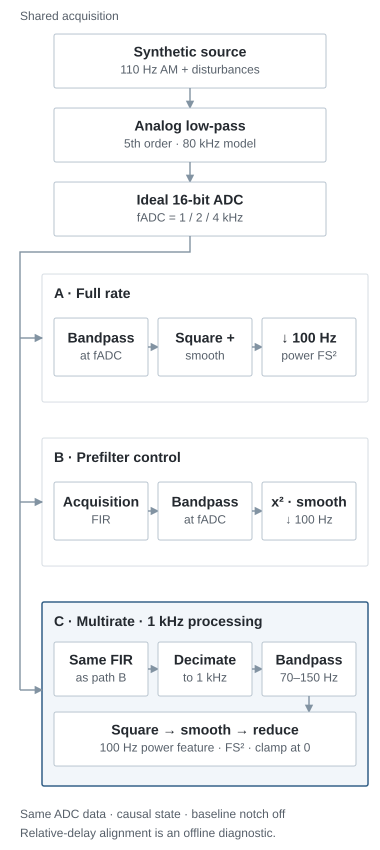

End-to-End Neural Signal Chain Simulation
Motivation: Through the interview process, I found myself thinking more deeply about the end-to-end neural signal chain and how noise and design choices at each stage affect the signal available for feature extraction. I built this simulation for myself to make those interactions more concrete by comparing signal-chain conditions and measuring what changes in the downstream feature. The simulation is a way to show how I approached the problem: define a focused question, make the assumptions explicit, compare processing paths, and identify what I’d want to validate with bench measurements and real neural data.
Approach: I compare three processing paths on the same ADC samples: full rate, a prefilter control, and multirate processing at 1 kHz. The signal-chain simulation and stateful DSP run in C. I use Python to set parameters, design filters, run the sweeps, and check the outputs against analytical and SciPy references.
Model and scope: I’m using a synthetic 110 Hz carrier with 2 / 5 Hz modulation and 20 paired noise seeds. This version is single-channel, with an ideal 16-bit ADC and double-precision DSP. I haven’t tied the model to measured hardware or established execution time or power consumption.
Result: In the nominal case, I get 0.019% maximum aligned clean-feature error versus full rate, about 103 ms signal delay, and 23% / 48% fewer multiplications at 2 / 4 kHz ADC rates.
Signal chain pipeline

Why this output? I used smoothed 70–150 Hz power as a defined feature to compare across the pipelines. Squaring and smoothing produce a local mean-square estimate, which I output at 100 Hz. I still need to test whether this feature is useful for a real downstream task and whether its delay is acceptable. My design choices →
What changes when I reduce the rate?
Does the feature hold up?
For the nominal 110 Hz cases at 2 / 4 kHz ADC rates, yes. The clean multirate feature stays within 0.019% NRMSE of the full-rate reference after independent delay alignment. I check the noisy path separately; its aligned error is about 0.28–0.29%. That tells me the feature is preserved in this model. I still need real data to judge its usefulness.
Why the prefilter?
I included path B to separate the acquisition FIR’s effect from rate reduction. Comparing A with B shows what the added FIR changes while keeping the full processing rate. Comparing B with C then adds decimation and redesigned downstream filters. That gives me a control for interpreting where the differences come from.
What does delay change?
The filters shift the feature in time, so comparing the original timestamps includes that shift in the error. I use an independent clean calibration to align the reference and inspect the remaining difference. That is an offline comparison: the nominal 2 / 4 kHz multirate cases still have about 103 ms of signal delay. CPU, scheduling, and transport time remain unmeasured.
The controls below let me inspect the recorded cases behind these comparisons.
Feature overlay
Selected − full-rate reference
The two traces nearly overlap in some cases, so I also show their difference. That panel has its own symmetric FS² scale; both panels use the same recorded timestamps.
Focus the chart and use ← / → to inspect a recorded sample.
What’s contributing to the delay?
Multirate results across 20 noise seeds
| ADC | Modulation | Clean paired NRMSE | Noisy NRMSE mean / observed max | Signal delay | Multiplications/s full → multirate |
|---|
How I’m reading the results
NRMSE: RMS error / RMS reference; clean preservation and noisy comparison are separate. Mean bias: clean power versus the analytic target A(t)²/2. Delay: independent clean phase calibration, not CPU time. Work: deployed multiplication counts, not cycles or energy.
These controls load recorded runs. I show 6–7 s in the plots, but calculate metrics over the full valid interval of each 20 s record. For alignment, I shift only the reference using the independent calibration; I don’t fit a new lag or gain for each noise seed. Full measurement definitions →
What I checked
I compared the C outputs with independent causal SciPy references, checked that block boundaries preserve state, and tested ADC rounding and overload. I also checked that the extra diagnostic calculations leave the deployed outputs and operation counts unchanged.
I checked alignment sensitivity across all 400 recorded noisy comparisons. Those checks apply to these cases; I haven’t established a bound for arbitrary transients.
I tested tones that fold directly into 110 Hz to check the acquisition FIR. That tests selected aliasing cases; it doesn’t settle worst-case broadband performance.
Nominal clean bias, preservation, delay, and ADC-clipping screens passed. Project screens, not product requirements.
What I’m still simplifying
So far, I’ve tested one carrier and two modulation rates with an idealized analog response and white noise. I haven’t calibrated an electrode / amplifier model or tested real neural data, band edges, or artifacts. Fixed-point behavior, referencing, and target timing, memory, buffers, and energy also remain unvalidated for this chain. The 20 seeds are a pilot.
What I’d measure next
The next thing I’d want is bench data: transfer response, noise PSD, folding interference, and overload recovery. I’d use that to check where the model agrees with the hardware and where it needs changing. Then I’d test feature usefulness on real recordings and work through target arithmetic and timing. Full limitations →